卷积神经网络与图像识别
CNNs and Image Recognition
从图像分类的任务与变换要求出发，理解全连接方案的困难；逐步学习卷积网络的组成、训练与经典架构。
图像分类（image classification）的任务是判断一幅图像属于哪个类别。例如，输入一张动物照片，系统需要在猫、狗、鸟等候选类别中给出判断。
本讲先从分类任务引出卷积神经网络（Convolutional Neural Network，CNN），再讨论网络的训练与经典架构。先明确任务要求，再理解连接方式、组件计算和设计选择。
图像分类为什么需要卷积结构
从输入图像到类别判断
一次分类包含一条完整的前向路径：
- 输入图像：像素值描述颜色与空间位置，构成网络输入。
- 提取表示（representation）：神经网络把像素转换为有助于区分类别的特征。
- 产生类别分数：线性分类器对特征加权，每个候选类别得到一个分数（logit）。
- 得到类别概率与判断：softmax 把分数转换成总和为 1 的概率，通常选择概率最大的类别。

例如，猫、狗、鸟、人的类别分数分别为 3.2、1.3、0.2、−0.8，转换后的概率约为 0.821、0.123、0.041、0.015。猫的概率最高，因此输出“猫”；这些分数与概率分别对应流程中的两个不同阶段。
预测时走完这条路径即可输出类别。训练时还需要真实标签：交叉熵（cross-entropy）比较概率与标签，反向传播据此调整参数，使正确类别获得更高概率。损失是训练流程的一环，整个任务还包括学习表示和作出分类判断。
同一对象变化后，类别应保持稳定
把同一对象缩小、旋转或移到图像另一侧，它通常仍属于同一类别。分类任务因此要求对允许的空间变换具有不变性（invariance）：像素发生变化，类别判断保持一致。

网络既要识别对象，又要处理位置、大小和姿态变化。有了这些要求，接下来可以追问：直接使用上一讲的多层感知机（Multilayer Perceptron，MLP）是否合适？
全连接方案的参数代价
最直接的方案是把图像展平（flatten）成向量，再送入全连接层。先算一个低分辨率、浅层网络的例子。
一幅 32\times32 的 RGB 图像包含：
32\times32\times3=3072
个输入值。若使用两层隐藏层，宽度分别为 4096 和 2048，输出 10 个类别，包含偏置的参数量为：
\begin{aligned}
N_{\text{param}}
&=(3072+1)\times4096\\
&\quad +(4096+1)\times2048\\
&\quad +(2048+1)\times10\\
&=20{,}998{,}154\approx 21\text{M}
\end{aligned}
只有两层隐藏层已经需要约 2100 万参数。真实图像常远大于 32×32，网络也可能达到数百层，密集连接的存储与计算成本随之增加。
为什么全连接的连接方式不适合直接处理大图像
- 每个输出读取全部输入：每一对输入、输出单元都需要独立权重，层宽的乘积决定矩阵规模。
- 未直接利用二维邻域：展平保留像素值和固定位置次序，但网络连接没有表达哪些像素在二维图像中相邻。
- 不同位置没有共享检测器：同一条边缘出现在不同位置时，全连接层需要分别学习对应位置的权重。

这说明需要在连接结构中加入图像的局部性，并让相同的模式检测方法跨位置复用。
局部连接与权重共享
视觉皮层具有拓扑映射：皮层中相邻的细胞对应视野中相邻区域。这提供一种直觉——处理视觉信号时，可以保留局部区域与响应单元之间的对应关系。

视觉信号具有明显的局部结构。边缘、纹理和角点都可以从小邻域中检测；相同模式还可能出现在图像的不同位置。
CNN 因此采用两项约束：
- 局部连接：一个输出只读取输入中的局部窗口。
- 权重共享：同一组核参数扫描不同空间位置。
局部连接保留邻域关系，权重共享避免为每个位置单独学习一套检测器。接下来用卷积的滑动窗口把这两项约束落实为具体计算。
卷积核如何生成特征图
先看一维信号上的滑动窗口
卷积（convolution）让一个短滤波器沿输入移动。在每个位置，滤波器只读取当前窗口中的值，对它们加权求和，产生一个输出。输入位置不断变化，滤波器权重保持相同。

取输入 x=[1,1,2,-1,1,-3,1]，核 w=[1,0,-1]。采用深度学习常用的互相关（cross-correlation）约定，第一个窗口计算：
y_0=1\times1+0\times1+(-1)\times2=-1
窗口右移一格，输出变为：
y_1=1\times1+0\times2+(-1)\times(-1)=2
依次移动得到 y=[-1,2,1,2,0]。由这个例子归纳，长度为 (K) 的核、步幅为 1、无填充时：
y_t=\sum_{k=0}^{K-1} w_k x_{t+k}这里 (t) 是窗口左端位置，(k) 是窗口内偏移，输出长度为输入长度减去 (K) 再加 1。数学卷积通常写成 y_t=\sum_k w_kx_{t-k}，包含核翻转；下面的 CNN 前向计算统一使用不翻转核的互相关约定。
二维卷积：从信号窗口到图像区域
图像有行、列两个空间方向，因此把一维窗口换成二维小区域。仍按“取窗口 → 对应元素相乘 → 求和 → 写入一个输出位置”计算，再沿两个方向移动。

对二维输入 X\in\mathbb{R}^{H\times W} 和卷积核 K\in\mathbb{R}^{K_h\times K_w}：
Y_{i,j}=\sum_{m=0}^{K_h-1}\sum_{n=0}^{K_w-1}
K_{m,n}X_{i+m,j+n}这里 Y_{i,j} 对应输入中左上角为 ((i,j)) 的局部窗口。所有位置共享同一个 (K)，输出矩阵 (Y) 称为特征图（feature map）。
把卷积放回网络：先认识组件
从输入图像到类别判断，卷积网络通常包含卷积层、池化层、归一化、激活函数和全连接层。卷积主干学习表示，分类器把表示转成类别分数。


先认出这些组件的位置，接下来逐个解释其功能。此时重点仍是卷积层：每个输出位置对应一个局部窗口，同一组权重覆盖全部有效位置。

动态观察：移动输入窗口，复用相同的核参数
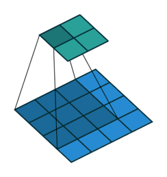
以值为 0 到 8 的 3×3 输入和核 ([[0,1],[2,3]]) 为例，左上输出为 0\times0+1\times1+2\times3+3\times4=19。向右、向下滑动后得到输出 ([[19,25],[37,43]])。
卷积核检测什么
核中的权重决定局部响应方式。固定核可以执行边缘检测、锐化和高斯模糊；训练得到的核则根据任务自动形成有用模式。

观察同一张图像：边缘检测突出相邻像素的差异，锐化增强局部细节，高斯模糊用加权平均平滑变化。确定计算方式以后，再看窗口移动与输入变换会怎样影响输出。
平移等变、填充与步幅
平移等变性
将输入中的对象平移，检测它的局部模式也会移动，所以对应响应应出现在新的位置。

动态观察：输入移动，特征响应也随之移动
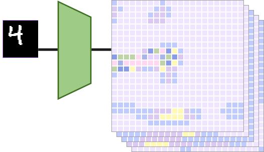
设 T_\Delta 表示将输入平移 \Delta，卷积算子为 (f)。理想的离散条件下：
f(T_\Delta X)=T_\Delta f(X)
输入移动后，响应也移动到对应位置，这一性质称为平移等变性（translation equivariance）。边界填充、步幅大于 1 和离散采样会让实际网络中的等变关系出现偏差。
分类最终希望保持类别稳定，特征图则保留目标的位置。这两种要求分别对应不变性和等变性，不应混用。
旋转为什么不同
旋转会改变局部像素排列与方向，同一个核不再以同样方式匹配输入。普通卷积因此没有天然的旋转等变保证。

动态观察：旋转后的局部模式会与原核产生不同响应
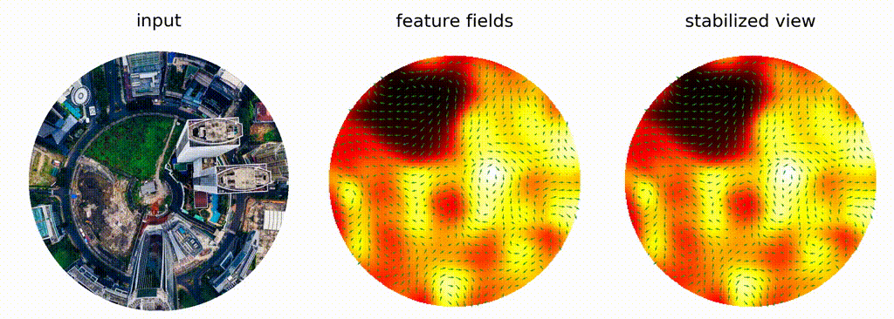
后面会通过池化与数据增强讨论对空间变化的稳定性。现在先解决实际卷积的边界与移动规则。
填充：窗口如何覆盖边缘
无填充时，核只能放在完整落入输入的位置，输出会缩小。填充（padding）在边界外补值，常见做法是补零，让核也能覆盖靠近边缘的区域。

动态观察：在输入四周补值，再执行相同的乘加
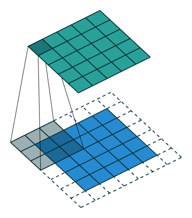
步幅：窗口移动的间隔
步幅（stride）决定每次移动多少格。步幅为 1 时逐格计算，为 2 时隔一格读取窗口，输出通常更小。高度与宽度的步幅可以分别指定。

动态观察：移动间隔越大，输出采样通常越稀疏
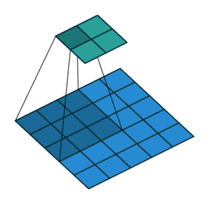
数有效窗口，得到输出尺寸

动态观察：先数有效窗口，再归纳尺寸公式
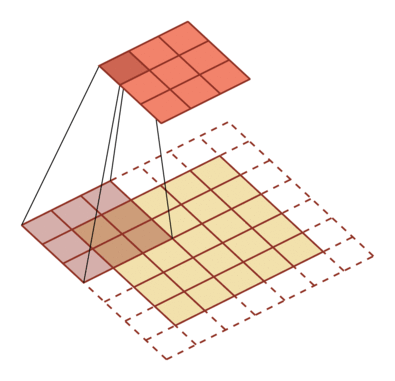
对单个空间维度，输入长度为 W_{in}，核大小为 (K)，两侧各填充 (P)，步幅为 (S)，膨胀率为 1 时：
W_{out}=\left\lfloor\frac{W_{in}+2P-K}{S}\right\rfloor+1- (P) 增大时，可计算的边缘位置增加。
- (S) 增大时，采样更稀疏，输出尺寸通常减小。
- 向下取整意味着末端放不下完整窗口的位置不会产生输出。
例如 W_{in}=5、K=3、P=1、S=2：
W_{out}=\left\lfloor\frac{5+2-3}{2}\right\rfloor+1=3二维情况分别对高度和宽度应用同一公式。
卷积输出尺寸
窗口可以在扩展后的输入上产生 3 个有效位置。
多通道卷积与深度可分离卷积
标准多通道卷积
RGB 图像由红、绿、蓝三个通道组成。要生成一个输出特征图，卷积核必须为每个输入通道提供一个空间切片，先分别乘加，再把各通道结果相加。

因此，核的输入通道数必须等于图像或上一层的通道数。若需要多个输出特征图，就使用多组这样的核：每组读取全部输入通道，各自产生一个输出通道。

不同组的权重可以响应不同颜色、方向和纹理。输出通道数表示学习了多少组特征响应，并不要求每个通道都对应一个类别。

把空间滑动与通道求和合在一起，可以写出完整的多通道计算。
设输入 X\in\mathbb{R}^{N\times C_{in}\times H\times W}，卷积核 K\in\mathbb{R}^{C_{out}\times C_{in}\times K_h\times K_w}。忽略膨胀率后，输出为：
Y_{b,o,i,j}=b_o+
\sum_{c=0}^{C_{in}-1}
\sum_{m=0}^{K_h-1}
\sum_{n=0}^{K_w-1}
K_{o,c,m,n}X_{b,c,iS_h+m-P_h,jS_w+n-P_w}这里 (N) 是批量大小，(b) 是样本索引，(o,c) 分别是输出、输入通道索引，b_o 是输出通道偏置，S_h,S_w 是两个方向的步幅，P_h,P_w 是填充。越界输入按前述补零处理。
不计偏置，标准卷积的参数量为：
K_hK_wC_{in}C_{out}每个输出通道都要学习完整的空间与通道权重。用 3×3 核把 3 个输入通道变为 4 个输出通道，需要 108 个参数。

既然空间提取与通道融合是两项工作，能否把它们拆开，减少重复的参数？
深度可分离卷积
深度可分离卷积（depthwise separable convolution）把标准卷积分成两步：
- Depthwise convolution：每个输入通道独立执行空间卷积。
- Pointwise convolution：使用 1\times1 卷积混合通道。

参数量变为：
K_hK_wC_{in}+C_{in}C_{out}以 3\times3 核、3 个输入通道、4 个输出通道为例：
N_{\text{standard}}=3\times3\times3\times4=108N_{\text{separable}}=3\times3\times3+3\times4=39这种拆分分别处理空间模式和通道混合，因此能显著降低参数量与计算量。
三类卷积变体
三类变体分别改变采样间距、输出空间组织和采样位置。
空洞卷积
空洞卷积（dilated convolution）在核采样点之间插入间隔。核大小为 (K)、膨胀率为 (d) 时，有效覆盖范围为：
K_{eff}=d(K-1)+1例如 3\times3 核在 d=2 时覆盖 5\times5 的范围，同时仍只使用 9 个核参数。

动态观察：间隔采样，扩大感受野
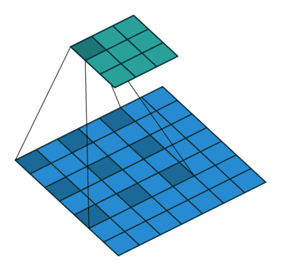
在同样的输出位置数和通道配置下，每个窗口的乘加次数保持不变；变化的是读取位置的间距。
转置卷积
转置卷积（transposed convolution）使用与卷积线性映射的转置相对应的连接方式，把较小特征图映射到较大的空间网格。多个输入值可能向同一输出位置贡献数值，因此重叠区域需要相加。
它常用于语义分割和图像生成中的可学习上采样。输出尺寸增大不表示恢复了前向卷积丢失的全部信息。

可变形卷积
可变形卷积（deformable convolution）为规则采样网格增加可学习的二维偏移：
y(p_0)=\sum_k w_k\,x(p_0+p_k+\Delta p_k)
p_k 是固定网格位置，\Delta p_k 是学习得到的偏移。偏移位置通常不是整数，需要插值读取输入特征。

前面三种变体仍通过可学习权重提取特征。接下来看另一种局部处理：用固定汇总规则压缩响应。
池化、局部稳定性与数据增强
先从一维局部汇总理解池化
池化（pooling）把多个激活汇总为一个值，用较低分辨率保留局部概况。最大池化取窗口最大值，平均池化取窗口平均值；这两种规则都没有需要学习的核参数。

一维信号可以按长度为 2 的不重叠窗口汇总。二维图像则使用小矩形区域，规则保持相同。对窗口 \Omega_{i,j}：
y_{i,j}^{\text{max}}=\max_{(m,n)\in\Omega_{i,j}}x_{m,n}y_{i,j}^{\text{avg}}=\frac{1}{|\Omega_{i,j}|}
\sum_{(m,n)\in\Omega_{i,j}}x_{m,n}比较同一图像上的两种池化

左上窗口包含 0、1、3、4，最大池化得到 4，平均池化得到 2。前者保留最强响应，后者保留平均水平；其他窗口按同样规则计算。
每个通道独立汇总

池化逐通道执行，不像标准卷积那样沿通道求和。空间尺寸下降后，输入有多少个通道，输出仍有多少个通道。
局部位置变化为什么可能不影响结果

最大值和平均值都不依赖窗口内元素的排列。因此响应在同一个窗口内移动时，池化结果可以保持不变。
池化会降低空间分辨率，并让表示对窗口内的小幅位置变化更稳定。这种稳定性受到窗口边界和步幅限制，不能直接推广为对任意平移、旋转或缩放都保持不变。

回到分类任务的要求：卷积使特征随目标位置移动，池化缓解某些局部位置变化。旋转、缩放和更大形变仍需要让训练过程看到合适的变化。
数据增强补充训练中的变换经验

数据增强通过生成任务允许的输入变化扩充训练分布，例如随机裁剪、翻转、颜色扰动或小角度旋转。增强方式必须与标签语义一致；某些方向敏感任务并不适合水平翻转。
归一化沿哪些维度统计
先理解“归一化”这个操作
各层激活的数值范围与分布可能不同。归一化（normalization）先减去均值，再除以标准差，把选定的一组数调整到可比较的统计尺度：
\hat x=\frac{x-\mu}{\sqrt{\sigma^2+\varepsilon}}\mu 与 \sigma^2 是这一组数的均值、方差，\varepsilon>0 避免分母为零。标准化阶段的均值接近 0、方差接近 1；随后可通过可学习的缩放与平移调整表示。

接下来的区别是：哪些元素应该放在同一组中计算均值和方差？
用统计范围区分不同方法

对 CNN 激活 X\in\mathbb{R}^{N\times C\times H\times W}：
- (N)：批次中的样本。
- (C)：通道。
- (H,W)：空间位置。
BN 跨样本统计，LN 在单个样本的特征内部统计，IN 在单个样本的单个通道内统计。对比图还列出了组归一化（Group Normalization，GN）：在单样本内把通道分组，每组跨组内通道与空间位置统计。本节重点展开前三种方法。
BatchNorm：先看训练阶段
批归一化（Batch Normalization，BN）可先从全连接的 N\times D 特征矩阵理解：每个特征维度跨 (N) 个样本计算均值和方差，再做标准化与仿射变换。

其中 (D) 是特征数；每个特征学习自己的缩放 \gamma 与平移 \beta。标准化控制统计尺度，仿射参数保留调整尺度与位置的能力。
BatchNorm：推理阶段改用累计统计

训练时逐批更新移动均值、移动方差。推理时固定使用这些累计统计量，避免单个预测依赖临时批次的组成。仿射参数 \gamma,\beta 仍使用训练得到的值。
例如，均值可按 \bar\mu\leftarrow0.9\bar\mu+0.1\mu_{batch} 更新；系数是可配置的更新约定，方差也需维护对应统计。
卷积中的 BatchNorm：每个通道共享统计

训练阶段中，BatchNorm 对每个通道跨 (N,H,W) 统计均值和方差：
\mu_c=\frac{1}{NHW}\sum_{n,h,w}X_{n,c,h,w}\sigma_c^2=\frac{1}{NHW}\sum_{n,h,w}(X_{n,c,h,w}-\mu_c)^2归一化及仿射变换为：
\hat X_{n,c,h,w}=\frac{X_{n,c,h,w}-\mu_c}{\sqrt{\sigma_c^2+\varepsilon}}Y_{n,c,h,w}=\gamma_c\hat X_{n,c,h,w}+\beta_c\gamma_c 和 \beta_c 是可学习参数。推理阶段通常使用训练期间累计的移动均值和移动方差，从而避免输出依赖当前推理批次。
LayerNorm：单个样本内部的特征统计

层归一化（Layer Normalization，LN）对每个样本内部的特征维度进行统计。本例在单个样本内跨 (C,H,W) 计算；全连接的 N\times D 输入则跨 (D) 计算。训练与推理使用相同规则，不依赖其他样本；具体轴由实现和张量布局决定。
InstanceNorm：单样本、单通道的空间统计

实例归一化（Instance Normalization，IN）对每个样本、每个通道独立跨 (H,W) 统计：
\mu_{n,c}=\frac{1}{HW}\sum_{h,w}X_{n,c,h,w}三者的核心差异在于哪些位置共享同一组统计量。比较归一化层时，应同时检查统计轴、训练与推理行为以及仿射参数。
前面已经分别介绍主要组件，接下来解释全连接与激活的作用，再把它们串成一个完整分类网络。
从卷积块到分类结果
全连接层：把特征汇总为类别分数
卷积层逐步提取局部特征，最后还需要一个分类器把这些特征汇总为全局判断。全连接层对特征加权组合，输出各类别分数，回到开头“表示 → 分类器 → 概率”的流程。

使用全连接分类头并不要求前面的全部计算也使用全连接；卷积主干先在空间上提取表示，分类头再汇总已有特征。
激活函数：在卷积之间加入非线性
卷积本身是线性运算。连续线性层仍可合并为一个线性映射，因此卷积后通常加入 ReLU 等非线性激活：
\operatorname{ReLU}(x)=\max(0,x)
卷积产生局部响应，ReLU 将负响应截为零。经过非线性后，下一层再组合这些响应，整个网络才能形成更丰富的映射。
把组件串回完整前向过程

一个典型图像分类网络按以下路径工作：
- 卷积层从局部邻域提取特征。
- 激活函数引入非线性表达能力。
- 池化或带步幅卷积降低空间尺寸。
- 多个阶段逐步形成更高层特征。
- 全连接层或全局池化后的分类头输出类别分数。
早期层更容易响应边缘和颜色变化，中间层组合纹理与局部形状，深层表示逐渐与类别相关。
再次区分减少参数的两个来源：局部连接限制每个输出读取的输入范围；权重共享让同一组参数覆盖不同位置。

动态观察：局部窗口减少连接，共享参数复用检测器
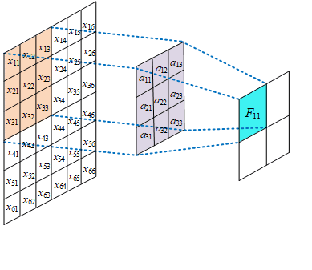
逐层学习的特征不必由人手工指定。观察同一图像在不同深度的响应，可以看到从简单局部模式到复杂组合的过程。

MNIST：逐层核对形状
MNIST 输入是 28×28 灰度手写数字，目标是 0 到 9 的十分类。示例第一层使用 10 个 5×5 核，第二层输出 20 个通道；卷积步幅为 1、无填充，最大池化窗口与步幅均为 2。

空间尺寸沿 28 → 24 → 12 → 8 → 4 变化，最后得到 20\times4\times4=320 个特征，再由全连接层输出 10 个类别分数。每个卷积阶段包含 ReLU 与池化。
同一任务下比较参数量
全连接方案把 784 个像素映射到 128 个隐藏单元，再映射到 10 类，含偏置参数量为：
N_{FC}=(784+1)\times128+(128+1)\times10=101{,}770卷积方案也要计入输入、输出通道和偏置：
\begin{aligned}
N_{CNN}&=(5\times5\times1+1)\times10\\
&\quad +(5\times5\times10+1)\times20\\
&\quad +(320+1)\times10\\
&=260+5020+3210=8490
\end{aligned}
在相同输入与十分类输出下，CNN 的参数量约为全连接方案的十二分之一。减少参数的结论来自局部连接与共享权重，具体数量必须根据完整结构计算。
共享卷积核的梯度
前向结构已经建立，现在要学习其中的参数。在每一层，反向传播已知后续网络传来的输出梯度，需要计算两类量：核梯度用于更新本层权重，输入梯度继续传给前一层。

固定一个核参数，追踪它出现在哪里
设单通道前向计算采用互相关，步幅为 1、无填充：
Y_{i,j}=\sum_{m=0}^{K_h-1}\sum_{n=0}^{K_w-1}
K_{m,n}X_{i+m,j+n}令上游梯度为：
G_{i,j}=\frac{\partial\mathcal{L}}{\partial Y_{i,j}}同一个核参数 K_{m,n} 被所有输出位置共享，因此它的梯度要累加各位置的贡献：

动态观察：同一参数在所有输出位置使用，贡献必须相加
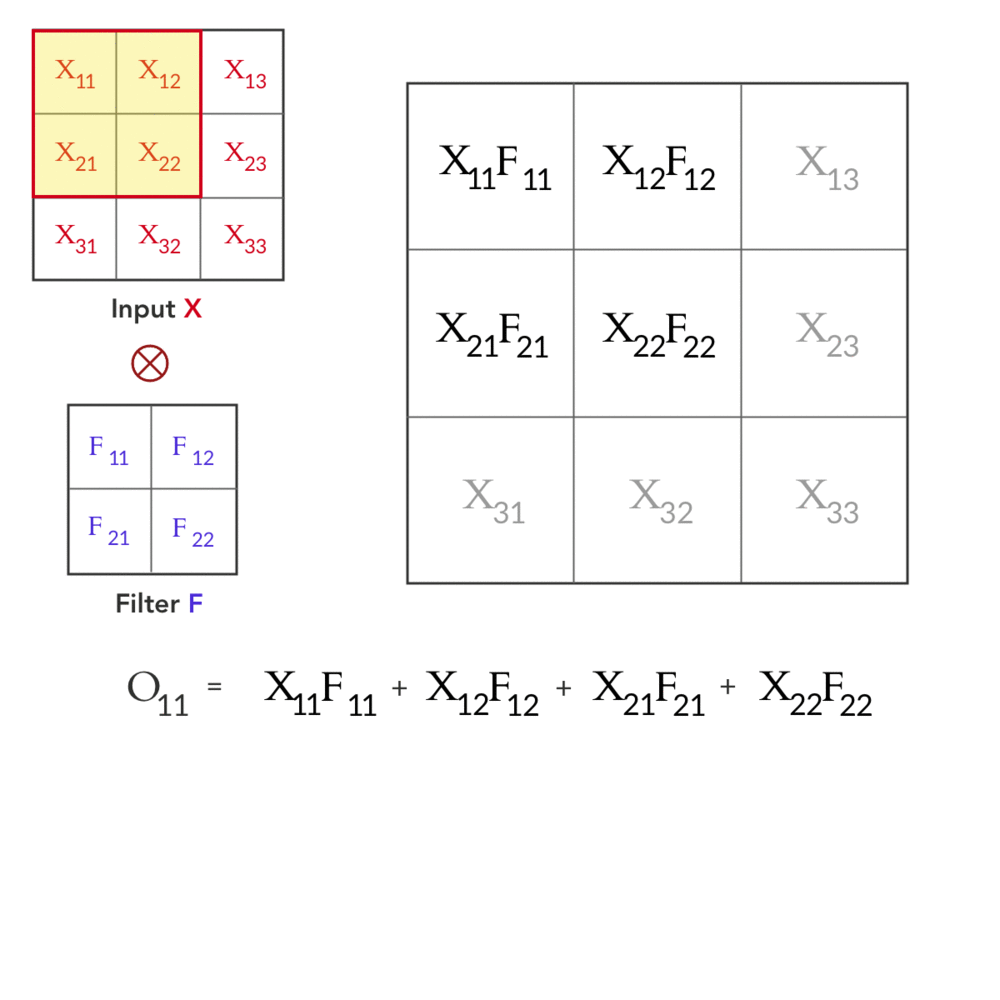
\frac{\partial\mathcal{L}}{\partial K_{m,n}}
=\sum_{i,j}G_{i,j}X_{i+m,j+n}考虑 3\times3 输入、2\times2 核和 2\times2 输出梯度。左上角核参数被四个输出共同使用，因此：
\frac{\partial\mathcal L}{\partial K_{0,0}}
=G_{0,0}X_{0,0}+G_{0,1}X_{0,1}
+G_{1,0}X_{1,0}+G_{1,1}X_{1,1}从逐项相加到统一的相关运算
四个核参数的梯度分别为：
\begin{aligned}
\frac{\partial\mathcal L}{\partial K_{0,0}}&=\sum_{i=0}^{1}\sum_{j=0}^{1}G_{i,j}X_{i,j}\\
\frac{\partial\mathcal L}{\partial K_{0,1}}&=\sum_{i=0}^{1}\sum_{j=0}^{1}G_{i,j}X_{i,j+1}\\
\frac{\partial\mathcal L}{\partial K_{1,0}}&=\sum_{i=0}^{1}\sum_{j=0}^{1}G_{i,j}X_{i+1,j}\\
\frac{\partial\mathcal L}{\partial K_{1,1}}&=\sum_{i=0}^{1}\sum_{j=0}^{1}G_{i,j}X_{i+1,j+1}
\end{aligned}每一项都遵循“上游梯度 × 该输出位置实际读取的输入”。从矩阵运算看，核梯度可以组织为输入 (X) 与输出梯度 (G) 的有效互相关。
多批次、多输入通道时，还需要对批次和所有相关输出通道求和。偏置梯度则直接累加对应输出通道上的 (G)。
把梯度传回输入
先找真正覆盖输入的窗口
换成对输入求导，仍使用刚才的 3×3 输入与 2×2 核。角点只参与一个输出，边缘可能参与两个，中心参与四个。每条路径都贡献“输出梯度 × 此路径使用的核系数”。

对任意输入位置 ((a,b))：
\frac{\partial\mathcal L}{\partial X_{a,b}}
=\sum_{i,j}\sum_{m,n}
G_{i,j}K_{m,n}
\mathbf{1}[a=i+m,\ b=j+n]指示函数只保留真正依赖 X_{a,b} 的路径。
仍以 2\times2 核为例，几个输入位置的梯度为：
\frac{\partial\mathcal L}{\partial X_{0,0}}=G_{0,0}K_{0,0}\frac{\partial\mathcal L}{\partial X_{0,1}}
=G_{0,0}K_{0,1}+G_{0,1}K_{0,0}\begin{aligned}
\frac{\partial\mathcal L}{\partial X_{1,1}}
&=G_{0,0}K_{1,1}+G_{0,1}K_{1,0}\\
&\quad+G_{1,0}K_{0,1}+G_{1,1}K_{0,0}
\end{aligned}为什么需要旋转核
从中心位置的公式可以看到，输出梯度按正向位置排列时，对应核系数沿两个方向反向排列。因此把核水平、垂直各翻转一次，也就是旋转 180°。

补边后恢复完整输入形状

动态观察：输出梯度补边 → 与旋转核互相关 → 恢复输入形状
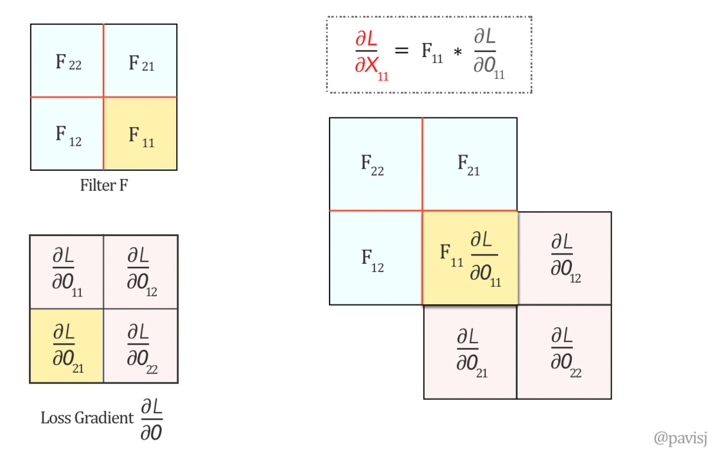
给 2×2 输出梯度四周各补 1 个零，得到 4×4 数组，再与旋转后的 2×2 核做有效互相关，得到 3×3 输入梯度。边缘贡献自然由补零表达。
这一覆盖完整空间范围的运算常称 full 操作。按数学卷积定义，也可写成 (G) 与未旋转核的 full convolution；按本文前向互相关约定，则使用旋转核做 full cross-correlation，避免重复翻转。
核梯度与输入梯度都可组织为卷积型运算，但读取对象、边界范围和核排列不同。
步幅为 2 的输入梯度
先重建带步幅的前向窗口
考虑 5\times5 输入、3\times3 核、步幅 2、无填充。输出尺寸为：
\left\lfloor\frac{5-3}{2}\right\rfloor+1=2四个输出位置的输入窗口左上角依次为：
(0,0),\quad(0,2),\quad(2,0),\quad(2,2)

动态观察：5×5 输入、3×3 核、2×2 输出
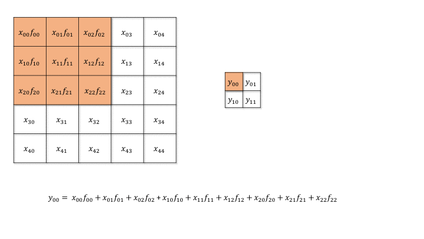
按角点、边缘、中心逐步增加依赖路径
设输出梯度为 G\in\mathbb{R}^{2\times2}。输入位置只累加实际覆盖它的窗口。例如：
\frac{\partial\mathcal L}{\partial X_{0,0}}=G_{0,0}K_{0,0}\frac{\partial\mathcal L}{\partial X_{0,1}}=G_{0,0}K_{0,1}
\frac{\partial\mathcal L}{\partial X_{0,2}}
=G_{0,0}K_{0,2}+G_{0,1}K_{0,0}
中心位置 X_{2,2} 被四个窗口共同覆盖：
\begin{aligned}
\frac{\partial\mathcal L}{\partial X_{2,2}}
&=G_{0,0}K_{2,2}+G_{0,1}K_{2,0}\\
&\quad+G_{1,0}K_{0,2}+G_{1,1}K_{0,0}
\end{aligned}
再用插零、填充和旋转组织统一计算

动态观察：2×2 → 插零为 3×3 → 填充为 7×7 → 输出 5×5
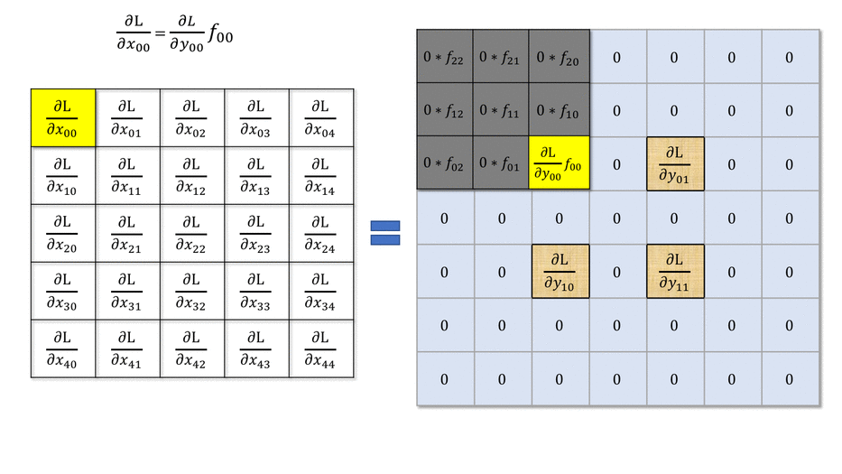
为了把逐位置关系组织成统一运算，先在相邻输出梯度之间插入 (S-1) 个零。步幅为 2 时：
G^{\uparrow2}=
\begin{bmatrix}
G_{0,0}&0&G_{0,1}\\
0&0&0\\
G_{1,0}&0&G_{1,1}
\end{bmatrix}随后在四周填充 (K-1-P) 个位置，并使用旋转 180^\circ 的核进行有效互相关。本例中 K=3,P=0，因此四周填充 2，最终得到 5\times5 输入梯度。
形状依次为 2×2 输出梯度、3×3 插零梯度、7×7 补边梯度、5×5 输入梯度。插零恢复前向窗口间隔，补边处理边缘依赖，旋转核对应逆向的核系数排列。
一般实现还要检查输入尺寸不能被步幅整除时产生的余量；框架中的转置卷积会用 output_padding 等参数消除尺寸歧义。
步幅 2 的输入梯度
原始输出梯度
输出是 2×2，每个位置对应一个步幅为 2 的前向窗口。
G ∈ R^(2×2)步幅为 2 的核梯度
固定左上角核参数
核梯度仍然遵循“上游梯度 × 对应输入”。步幅只改变被读取的输入坐标：
\frac{\partial\mathcal L}{\partial K_{m,n}}
=\sum_{i,j}G_{i,j}X_{2i+m,2j+n}对 3\times3 核的左上角参数：

\begin{aligned}
\frac{\partial\mathcal L}{\partial K_{0,0}}
&=G_{0,0}X_{0,0}+G_{0,1}X_{0,2}\\
&\quad+G_{1,0}X_{2,0}+G_{1,1}X_{2,2}
\end{aligned}换到右下角参数，观察输入坐标平移

对右下角参数：
\begin{aligned}
\frac{\partial\mathcal L}{\partial K_{2,2}}
&=G_{0,0}X_{2,2}+G_{0,1}X_{2,4}\\
&\quad+G_{1,0}X_{4,2}+G_{1,1}X_{4,4}
\end{aligned}插零保留输入采样间隔

动态观察：输出梯度插零，与输入作有效互相关
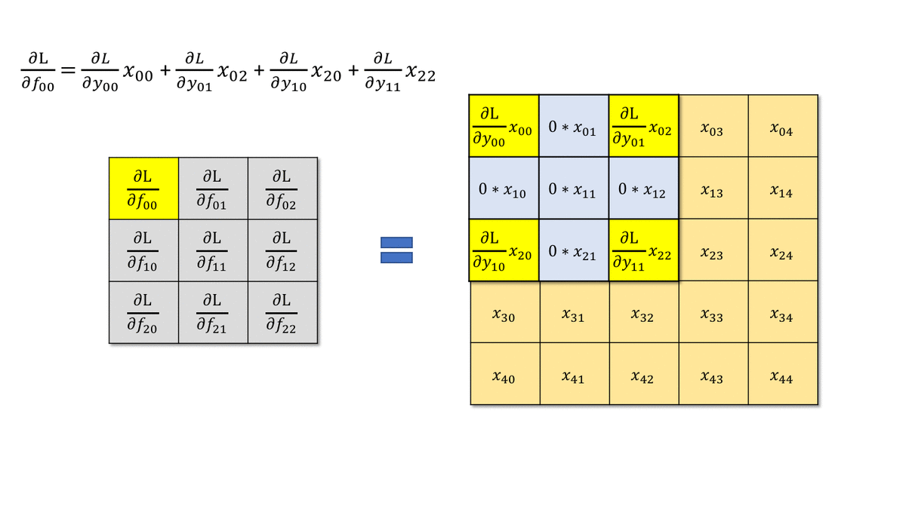
九个核参数都汇总四个输出位置的贡献。把 (G) 插零为 3×3 后，与 5×5 输入作有效互相关，可得到 3×3 核梯度。此处读取的是输入 (X)，无需输入梯度步骤中的核翻转。
输入梯度和核梯度共享链式法则，但求导对象不同：输入梯度汇总“哪些输出依赖这个输入”，核梯度汇总“这个共享参数在哪些输出位置被使用”。
池化层的反向传播
池化层没有卷积核参数，但必须继续向前一层传递梯度。

最大池化在前向阶段保存最大值位置。若窗口中的最大值索引为 r^*，上游梯度 (g) 只传到该位置：
\frac{\partial\mathcal L}{\partial x_r}=
\begin{cases}
g,&r=r^*\\
0,&r\ne r^*
\end{cases}平均池化把梯度均匀分给窗口中的 (M) 个元素：
\frac{\partial\mathcal L}{\partial x_r}=\frac{g}{M}若池化窗口重叠，同一个输入位置会收到多个窗口的梯度贡献，最终仍需相加。最大值并列时的具体路由由框架实现定义。
小数据集与迁移学习
数据不足时，先提出训练问题

从头训练 CNN 需要足够数据支持大量参数。迁移学习（transfer learning）先在大规模数据上训练主干网络，再把其表示迁移到目标任务。
先获得大规模数据上的预训练表示

模型先在 ImageNet 等大规模数据上学习。较早层的边缘、颜色和纹理通常较通用，靠近输出的层更贴近源任务类别。目标任务可以复用主干，替换最后的分类头。
小数据方案：冻结主干，训练分类头

把输出层替换成目标任务的 (C) 类输出，并初始化新层。冻结主干表示保留已有权重，只用目标数据训练新的类别映射。
更多数据方案：微调已有特征

微调（fine-tuning）从预训练参数出发，更新后部或全部主干层，使表示更适合目标任务。已有参数通常使用较小学习率，新分类头则需要更充分的训练。
两个决策轴：数据量与任务相似性

- 数据少、任务相似：优先冻结主干，训练末端分类器。
- 数据多、任务相似：可以微调更多层。
- 数据少、任务差异大：优先寻找更接近的预训练模型，或补充数据；只解冻更多层未必能解决问题。
- 数据多、任务差异大：可全面微调，或在数据足够时从头训练。
当目标数据少于约百万张时，可以优先评估迁移学习方案。这个数量只是工程经验提示，真正的选择还取决于源任务与目标任务的相似性、标注质量、模型规模和可用算力。

PyTorch torchvision 和常见模型库提供了大量预训练模型，可直接作为实验起点。选择训练范围后，应通过验证集检查迁移收益与过拟合，再决定是否继续解冻。
前面回答了组件如何计算、梯度如何传播以及数据不足时怎样训练。接下来观察经典架构怎样把这些方法组合起来。
架构演进的比较维度

经典架构展示多条设计路线：早期的基本骨架、增加深度的小核堆叠、多尺度分支、跨层连接和通道重标定。轻量化也是路线图中的一个方向，本节沿上述主要案例展开。
阅读架构图时，统一记录以下信息：
- 每个阶段的空间分辨率与通道数。
- 卷积核大小、步幅和下采样位置。
- 分支输出采用相加还是通道拼接。
- 分类头的形式与参数规模。
- 深度增加后如何维持可训练性。
LeNet、AlexNet、VGG、GoogLeNet、ResNet、DenseNet 和 SENet 依次展示了基本骨架、大规模训练、规则化堆叠、多尺度分支、残差连接、特征复用和通道重标定。
LeNet：基本骨架

LeNet 由卷积、激活、下采样和全连接分类器组成。课程采用 3 个卷积层、2 个池化层和 1 个全连接层的计数方式，突出 CNN 的基本处理流程。
其核心结构可以概括为：
\text{image}\rightarrow
[\text{conv}\rightarrow\text{activation}\rightarrow\text{pool}]\times2
\rightarrow\text{conv}\rightarrow\text{classifier}早期计算资源有限，网络规模较小，主要应用于手写字符等相对简单的识别任务。LeNet 的价值在于确立了后续 CNN 反复使用的组件组合。
AlexNet：大规模图像分类
从手写字符进入大规模自然图像任务，网络需要更强的特征提取能力与训练算力。

AlexNet 在 2012 年以 16.4% 的显著优势赢得 ILSVRC。网络包含 5 个卷积层、3 个池化层和 3 个全连接层，将更深的 CNN 用于大规模图像分类。
训练中采用了 dropout 和 GPU 加速。双 GPU 并行模式在不同 GPU 上保持相同模型结构，将训练数据拆分后分别训练并融合模型。
模型约有 6000 万参数，模型大小约为 240M。AlexNet 说明更大数据、更深网络、正则化和 GPU 计算可以共同推动图像识别性能。
VGG：重复小卷积核
先认识规则的阶段结构

VGG-16 包含 13 个卷积层、5 个池化层和 3 个全连接层。它反复堆叠 3\times3 卷积与 2\times2 池化，形成规则、易读的阶段结构。
为什么重复小核

两个步幅为 1 的 3\times3 卷积具有 5\times5 的有效感受野，并在中间增加一次非线性。这里比较覆盖范围，不表示两层非线性变换等价于一层大核。若输入、中间和输出通道数都为 (C)，忽略偏置：
N_{5\times5}=25C^2N_{3\times3\times2}=18C^2因此参数比为：
\frac{18C^2}{25C^2}=\frac{18}{25}通道数不同时，应使用一般形式：
9C_{in}C_{mid}+9C_{mid}C_{out}VGG-16 约有 1.38 亿参数，模型大小约 500M。规则结构便于理解和迁移，但全连接层带来较高参数与存储成本。
层级表示、性能与成本

浅层偏向局部颜色与方向，深层组合成更复杂模式，识别错误率随架构改进而下降。不过单纯堆叠更多层会增加参数与优化难度，这引出下一组结构选择。
GoogLeNet：多尺度分支与辅助分类器
从加深网络的问题进入新的结构

数据有限时，参数增多容易过拟合；网络更深时，梯度传播和优化也更困难。增强特征提取能力可以考虑增加宽度和加入捷径。先展开增加宽度的路线。
Inception：并行提取不同尺度
GoogLeNet 通过 Inception 模块增加网络宽度，在同一输入上并行提取不同尺度的特征。

典型 Inception 模块包含：
- 1\times1 卷积分支。
- 1\times1\rightarrow3\times3 卷积分支。
- 1\times1\rightarrow5\times5 卷积分支。
- 池化后接 1\times1 卷积的分支。
各分支通过合适 padding 保持相同空间尺寸，随后沿通道维拼接：
Y=\operatorname{Concat}(Y_1,Y_3,Y_5,Y_{pool})1\times1 卷积负责通道变换，可在昂贵的 3\times3 或 5\times5 卷积前减少输入通道，从而控制参数量与计算量。
辅助分类器：让中间层也获得监督

GoogLeNet 深度达到 22 层。为缓解深层网络中的梯度传播问题，它在不同深度加入额外 softmax 输出，使中间层也获得训练信号。辅助损失用于训练，推理时使用主分类输出。
ResNet：残差学习
先观察深层普通网络的训练困难

深层普通网络可能出现退化现象：加入更多层后，训练误差反而升高。这说明优化过程没有轻易找到与浅层网络等价或更好的映射。
残差块让新增层容易保持恒等映射

残差块把目标映射写成：
y=F(x)+x
(F(x)) 是若干卷积层学习到的残差，(x) 通过捷径连接直接传到输出。若某些层暂时没有贡献，令 (F(x)\approx0) 即可接近恒等映射。
相加要求两条路径形状一致。若空间尺寸或通道数变化，可以使用带步幅的投影捷径：
y=F(x)+W_sx
W_s 常由 1\times1 卷积实现。捷径连接为梯度提供了更直接的传播路径，使更深网络更容易优化。
从残差块到完整架构

网络按阶段改变分辨率与通道，并重复残差块。对照不同深度的结构表，除了总层数，还要检查块内组成、瓶颈层和阶段重复次数。
网络比较与 Inception-ResNet
准确率、计算量与参数量一起比较

比较经典网络时，准确率需要与参数量、计算量、输入分辨率和评价协议共同解读。模型更深并不自动意味着参数更多；分支宽度、瓶颈层和分类头都可能改变总成本。
准确率柱状图先给出识别表现；气泡图进一步编码：
- 横轴：每次计算的操作量，单位为 G-Ops。
- 纵轴：Top-1 准确率，越高越好。
- 气泡大小：参数量，与底部的百万参数图例对应。
相近准确率可能对应不同的计算与存储成本，不能只按深度或单项性能排序。
连接方式与完整结构对照

把各架构并排后，观察哪些部分是顺序堆叠、哪些增加了跨层路径，以及下采样出现在哪里。结构图把前面的模块差异落实到整网。
批量大小、耗时与功率

两张折线图的横轴均为批量大小（batch size）。左图纵轴为每张图的前向耗时，单位 ms；右图为净功率，单位 W。批量增大后，硬件利用率变化，单图平均耗时通常下降，而功率可能呈现不同趋势。
这些测量依赖硬件与测试设置。功率是单位时间的能量消耗，不能直接当作每张图的能耗；需要结合处理时间才能判断。
Inception-ResNet：组合多尺度与捷径

Inception-ResNet 将 Inception 的多尺度分支与残差连接结合。分支先提取不同范围的信息并完成通道融合，再通过残差方式与输入相加。实现时仍需保证相加两侧形状一致。
DenseNet 与 SENet
DenseNet：跨层特征拼接

DenseNet 让第 (l) 层接收此前所有层的输出：
x_l=H_l([x_0,x_1,\ldots,x_{l-1}])方括号表示沿通道维拼接。早期特征可被后续层直接复用，梯度也能沿多条短路径传播。随着层数增加，通道数按增长率逐步增加，因此网络需要过渡层控制尺寸与通道。
SENet：通道重标定
在已经提取出的多通道特征上，还可以让网络根据当前输入决定各通道应被强调多少。

SENet 先对每个通道做全局平均池化，得到通道描述：
z_c=\frac{1}{HW}\sum_{h=1}^{H}\sum_{w=1}^{W}X_{c,h,w}随后通过一个小型门控网络生成通道权重：
s=\sigma(W_2\,\delta(W_1z))
最终按通道缩放原特征：
\widetilde X_{c,h,w}=s_cX_{c,h,w}这一模块可以嵌入 Inception 或残差分支：先计算特征，再生成通道权重并缩放，随后继续原有的数据路径。观察全局池化的旁支与直接传递特征的主支在哪里重新汇合。
ResNet 使用逐元素相加，DenseNet 使用通道拼接，SENet 使用通道缩放。三种操作改变张量的方式不同，阅读结构图时应分别检查融合位置与输出形状。
CNNs and Image Recognition
从局部计算到深层视觉网络